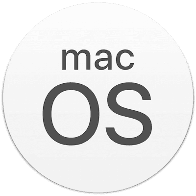
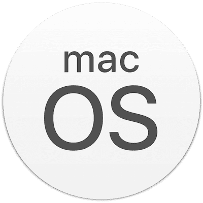
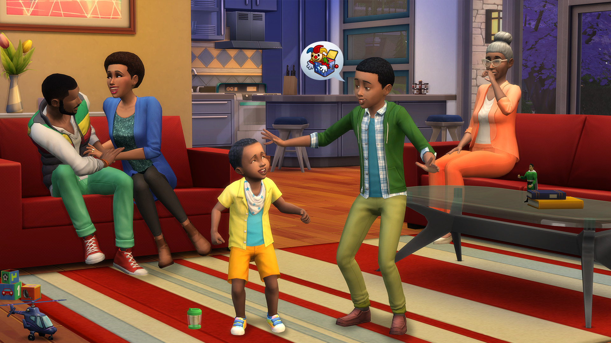

THE SIMS 4
Los Sims 4 es un videojuego de simulación de vida desarrollado por Maxis y publicado por Electronic Arts en 2014. Es la cuarta entrega de la serie Los Sims,
donde los jugadores crean y controlan personajes virtuales llamados Sims, administrando todos los aspectos de su vida diaria.
¿Cómo se juega?
La jugabilidad de Los Sims 4 se basa en crear y controlar personajes llamados Sims, gestionando sus vidas cotidianas, desde sus relaciones personales hasta sus carreras y emociones. Los jugadores pueden personalizar los Sims,
construir y decorar sus hogares, y tomar decisiones que influyen en su bienestar y desarrollo. Las emociones y necesidades de los Sims afectan su comportamiento, lo que añade un nivel de profundidad al juego.
Los jugadores tienen la libertad de contar sus propias historias, permitiendo que los Sims vivan y evolucionen en un mundo simulado dinámico.
Recuerda que lo puedes encontrar en las siguientes pltaformas.


 



Haz click aquí para saber más del juego y descargarlo. Diviertete!